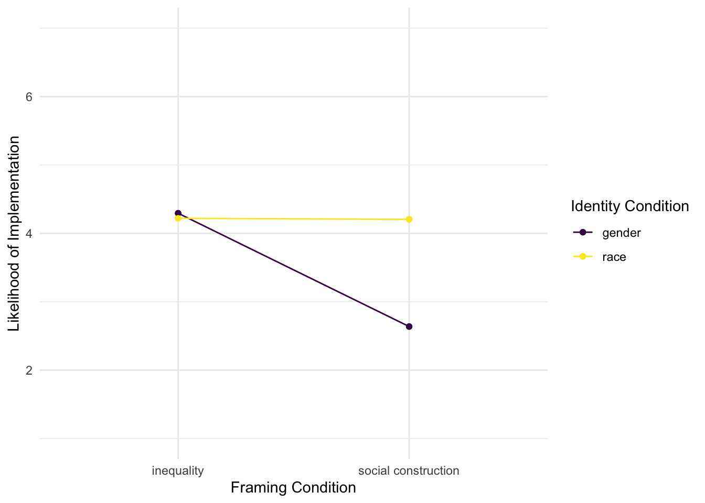
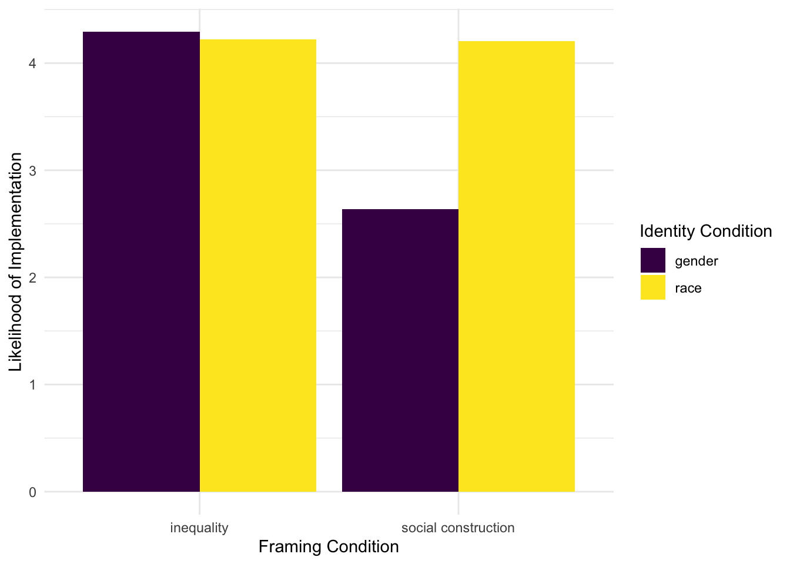

I want to build upon the work I did in my last two portfolio pieces and learn how to (1) simulate and (2) visualize data with significant two-way interactions.
I plan to simulate a dataset with variables that can be analyzed with a 2x2 design. The dataset is inspired by my first year project, in which I presented middle school teachers with hypothetical lesson topics (all related to contemporary social issues) and asked for their thoughts/opinions about them.
The two conditions:
I employed a mixed design, such that identity varied between subjects and framing differed within subjects.
Each teacher viewed four lesson topics in the actual study, but to simplify my simulation, I will give each teacher two lesson topics with the same identity condition and one of each framing condition.
The main outcome of interest was the teachers’ reported likelihood of implementing the lesson topics in their own classrooms on a scale from 1 (very unlikely) to 7 (very likely).
A simulated dataset with my variables of interest and a series of follow-up analyses and plots to visualize the results.
I was able to successfully simulate a dataset with a signficant two-way interaction that was consistent with the results I got in my original project. Learning to use the truncnorm package was helpful for keeping my simulated values within a reasonable/possible range. Both emmeans and ggplot provided nice interaction plots, but I preferred the bar plot in this context because I was analyzing the interaction between two categorical variables instead of a categorical variable and a continuous variable. I will keep both options in mind for future use!
library(tidyverse)
library(ggplot2)
library(MASS)
library(truncnorm)set.seed(123)
df_lessons <- data.frame(
id = 1:520)set.seed(123)
df_lessons$identity <- rep(c("race", "gender"),
length.out = 520
)This variable will be a bit more challenging to simulate. I don’t know the most efficient way to achieve the data structure that I want, but in the actual project, I used a wide-to-long transformation. I am going to try to recreate the process here:
set.seed(123)
df_lessons$topic1 <- rep(c("inequality"),
length.out = 520
)
df_lessons$topic2 <- rep(c("social construction"),
length.out = 520
)
df_lessons_long <- df_lessons %>%
pivot_longer(
cols = starts_with(c("topic")),
names_to = "topic_number",
values_to = "framing")
library(conflicted)
conflict_prefer("select", "dplyr")## [conflicted] Will prefer dplyr::select over any other package.df_lessons_long <- df_lessons_long %>%
select(id, identity, framing)That seemed to work!
In my original study, I observed that teachers responded most negatively to lessons about the social construction of gender. Across the other three combinations of conditions, responses were neutral-to-positive at very similar levels to one another. I am going to attempt to recreate this pattern in my simulation:
set.seed(123)
implementation <- rtruncnorm(n = 1040, a = 0, mean = c(4.2, 4.0, 4.3, 2.5), sd = 1.5)
df_lessons <- cbind(df_lessons_long, implementation)I realized on my first try that I was getting some negative values (which would have been impossible on my actual measures), so I used the truncnorm package to set the minimum of my simulated values at 0.
Let’s see if the mean implementation values across the four combinations of conditions match up with my expectations:
df_lessons %>%
group_by(identity, framing) %>%
select(implementation) %>%
summarize(across(everything(), list(mean = mean)))## Adding missing grouping variables: `identity`, `framing`
## `summarise()` has grouped output by 'identity'. You can override using the
## `.groups` argument.## # A tibble: 4 × 3
## # Groups: identity [2]
## identity framing implementation_mean
## <chr> <chr> <dbl>
## 1 gender inequality 4.29
## 2 gender social construction 2.64
## 3 race inequality 4.22
## 4 race social construction 4.20df_lessons_means <- df_lessons %>%
group_by(identity, framing) %>%
select(implementation) %>%
summarize(across(everything(), list(mean = mean)))## Adding missing grouping variables: `identity`, `framing`
## `summarise()` has grouped output by 'identity'. You can override using the
## `.groups` argument.Looks good! Like my actual findings, all of the means are pretty close, with the exception of the gender/social construction combination of conditions. To go beyond descriptive analyses, I will run an ANOVA to see if the group means are significantly different. In the original study, I used the lme4 package to run a model with a random intercept to account for the within-subjects nature of the framing variable. I will do the same here:
library(car)## Loading required package: carDatalibrary(lme4)## Loading required package: Matrix##
## Attaching package: 'Matrix'## The following objects are masked from 'package:tidyr':
##
## expand, pack, unpackreg <- lmer(implementation ~ framing * identity + (1|id), data = df_lessons)
Anova(reg, type = 3)## Analysis of Deviance Table (Type III Wald chisquare tests)
##
## Response: implementation
## Chisq Df Pr(>Chisq)
## (Intercept) 2274.8054 1 <2e-16 ***
## framing 171.5746 1 <2e-16 ***
## identity 0.3396 1 0.5601
## framing:identity 84.1317 1 <2e-16 ***
## ---
## Signif. codes: 0 '***' 0.001 '**' 0.01 '*' 0.05 '.' 0.1 ' ' 1A significant interaction between identity and framing, as well as a significant main effect of framing. I suspect that the interaction is driving the significant main effect, but let’s take a look…
Using the emmeans package to run contrasts and plot the identity x framing interaction:
library(emmeans)## Welcome to emmeans.
## Caution: You lose important information if you filter this package's results.
## See '? untidy'EMM <- emmeans(reg, ~ identity * framing)
pairs(EMM, simple = "identity")## framing = inequality:
## contrast estimate SE df t.ratio p.value
## gender - race 0.0742 0.127 1036 0.583 0.5602
##
## framing = social construction:
## contrast estimate SE df t.ratio p.value
## gender - race -1.5670 0.127 1036 -12.307 <.0001
##
## Degrees-of-freedom method: kenward-rogerpairs(EMM, simple = "framing")## identity = gender:
## contrast estimate SE df t.ratio p.value
## inequality - social construction 1.6573 0.127 518 13.099 <.0001
##
## identity = race:
## contrast estimate SE df t.ratio p.value
## inequality - social construction 0.0161 0.127 518 0.127 0.8990
##
## Degrees-of-freedom method: kenward-rogeremmip(reg, identity ~ framing, cov.reduce = range) +
theme_minimal() +
labs(x = 'Framing Condition',
y = 'Likelihood of Implementation',
color = 'Identity Condition') +
coord_cartesian(ylim = c(1,7)) +
scale_color_viridis_d()
Since framing is not a continuous variable, I want to try plotting the interaction with bars instead of lines:
df_lessons_means %>%
ggplot(aes(x = framing, y = implementation_mean, fill = identity)) +
geom_col(position = "dodge") +
labs(x = 'Framing Condition',
y = 'Likelihood of Implementation',
fill = 'Identity Condition') +
scale_fill_viridis_d() +
theme_minimal()
I prefer this visualization for this particular dataset/context. The contrast between the likelihood of implementation for the gender/social construction lesson and the other three lessons is very clear.